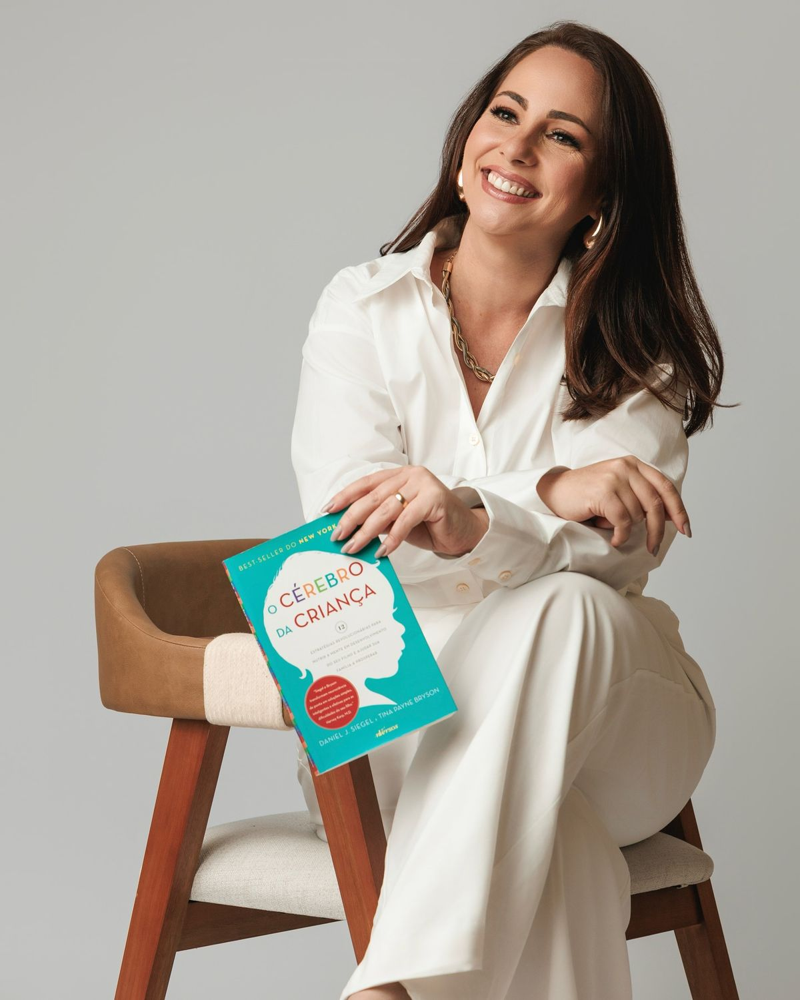

Nuestro equipo
Especialistas Psicólogos
Profesionales certificados con amplia experiencia en sus áreas de especialización.

Dra. Andrea Rojas
Psicóloga ClínicaEspecialista en ansiedad, depresión y trauma. 8 años de experiencia.
Dr. Marco Vega
Psicólogo InfantilEspecialista en desarrollo infantil, TDAH y dificultades de aprendizaje.
Dra. Lucía Torres
Psicóloga de ParejaEspecialista en terapia sistémica, pareja y familia. 6 años de experiencia.

Ps. Diego Morales
Psicólogo AdolescentesEspecialista en identidad, autoestima y salud mental adolescente.

Dra. Sofía Mendez
Psicóloga ClínicaEspecialista en duelo, autoestima y crecimiento personal. 5 años.